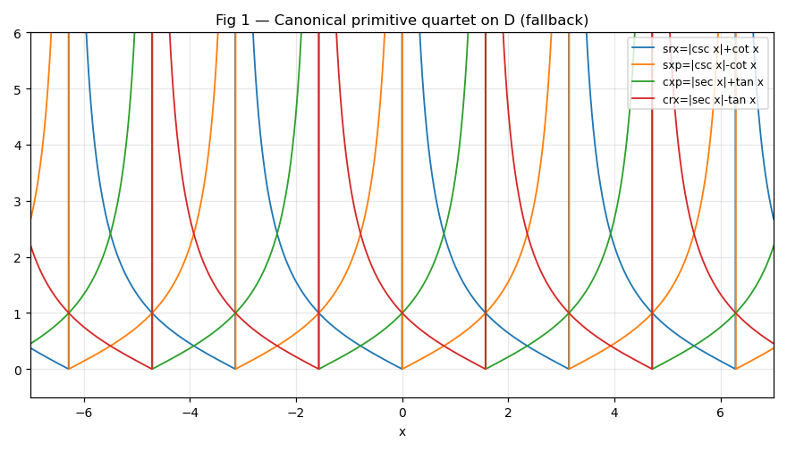
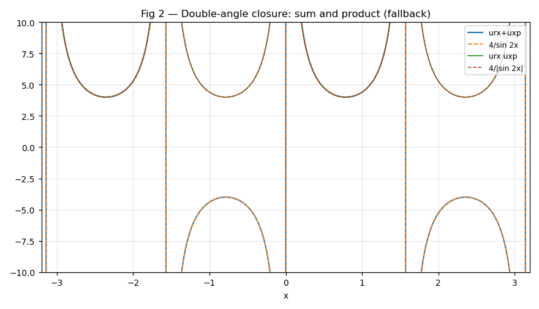
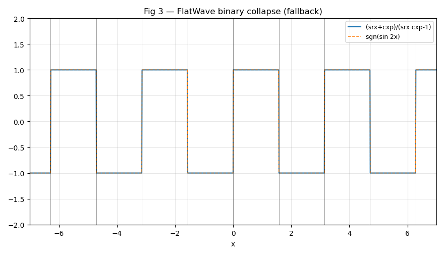
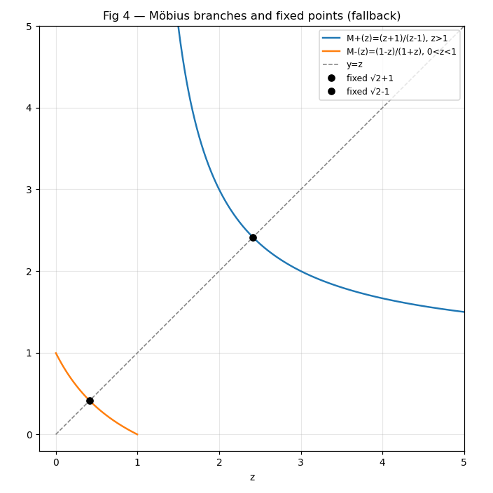
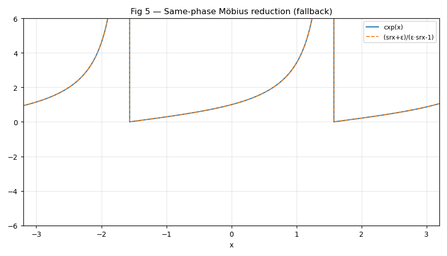
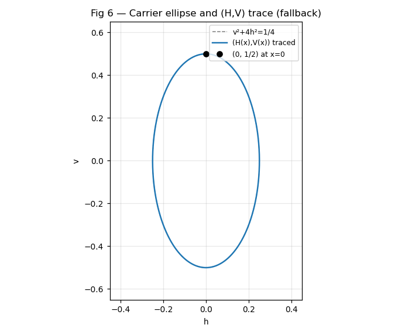
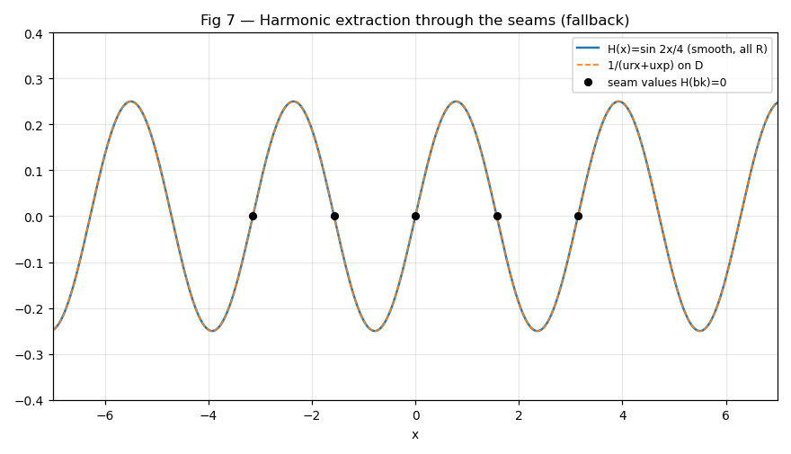

A restructured rewrite of Book 2 of R Theory — Volume I. Pictures and intuition first; the formal audit second. Every claim carries its status: P proof supplied in the manuscript text, S standard imported result, M manuscript assertion / stipulation, D definition, NC completed numerical check run for this page (sampled agreement ~1e-8 or better on the grids used — the pictured exact identities agree to ~1e-13, finite-difference derivative checks to ~9e-9 — a check, never a proof). Nothing on this page is a physical claim.
Contents. I. See it first · II. Then earn it · III. Certification · IV. Close the book
Seven pictures. Each one is a theorem of Book 2 drawn before it is proved. The graphs below are live Desmos calculators (drag to pan, scroll to zoom); if Desmos cannot load, a static rendering appears instead. Dashed curves are the identity's right-hand side — where you cannot see them, the two sides coincide exactly.







The formal audit, section by section, condensed. Notation: srx = |csc x|+cot x, sxp = |csc x|−cot x (Ds); cxp = |sec x|+tan x, crx = |sec x|−tan x (Dc); 𝒫 = (srx,sxp,cxp,crx) on D; urx = srx−crx, uxp = cxp−sxp (canonical order); sawr = 1/urx, sawx = 1/uxp; FlatWave = sawr+sawx; H = sin 2x/4, V = cos 2x/2, U = 4H, W = 2V; z = srx, w = cxp; Mε(z) = (z+ε)/(εz−1); ε = sgn(sin 2x) = αβ.
Book 1 withheld the names until the mathematics was proved without them; naming is now a purely definitional act (D1–D3) D. The negative-tangential member is proved to be exactly the reciprocal of the positive-tangential member — sxp = 1/srx, crx = 1/cxp — by rationalizing with csc²−cot² = 1 and sec²−tan² = 1 (T1, T2) P. Positivity on the maximal channel domains Ds, Dc (T3) P; at opposite-channel seams the pair takes the regular value 1 P. Conjugate sum/difference recovery of 2|csc x|, 2cot x, etc. (T4) P. Absolute-value preservation: the canonical global form keeps Book 1's |·|; chart-local droppings are not global (T5, C6) P. The quartet is definitional in name, theorem-level in reciprocity (T6) P.
Principal chart Q0: srx = cot(x/2), sxp = tan(x/2), cxp = tan(π/4+x/2), crx = tan(π/4−x/2) (T1, T2) P via standard half-angle and addition identities S. Maximal channel coordinates: θs ∈ (0,π) gives srx = cot(θs/2) on all of Ds (T3), a bijection onto (0,∞) per component (T4) P; cosine analogues with θc ∈ (−π/2,π/2) (T5, T6) P. Common-domain transport in ξk: even quadrants reuse the principal chart, odd quadrants the swapped chart — two chart types, selected by ε (T7, T8, C3) P. Range law: z = srx > 1 and w = cxp > 1 exactly on ε = +1 quadrants, 0 < z,w < 1 exactly on ε = −1 (T9) P; branch sign read from the range (C4) P. Midpoint values √2±ε (T10) P with cot(π/8) = √2+1 S; octant crossing order (T11) P. Stereographic recovery of sin x, cos x, tan x and the signed circle from z plus one half-turn label (T12, C5, C6) P. Rational double-angle formulas sin 2x = 4z(z²−1)/(z²+1)², cos 2x from z (T13, T14) P; double-angle branch sign from the unit threshold (C8) P.
Phase reflection is reciprocal inversion within each channel: srx(−x) = sxp(x), cxp(−x) = crx(x) (T1, C1) P; the unit threshold is the reflection fixed value (C2) P. Complete quarter-turn action (T2) P, preserving reciprocal pairing (C4) P. Half-turn invariance with descent to 𝕋π (T3, C5) P; no half-turn-branch recovery (C6) P; the induced quarter-turn has order two on the primitive representation (T4) P. Complementary-reflection action (T5) P. The quartet is a single orbit of one master function under the phase symmetries (T6) P; the induced permutation group is the Klein four V4 (T7) P, transitive on the quartet (C10) P — a mathematical label-permutation group, not a physical gauge group. ε transport laws (T8) P: two symmetries reverse the branch sector, two preserve it (C12) P. The non-scope declarations are stipulated boundaries M.
urx = srx−crx (D1), uxp = cxp−sxp (D2); Constitutional Rule 2.IV.R1 locks the order — the reversed sxp−cxp = −uxp is retired, not an alternate convention D. Complementary reflection exchanges the pair, urx(ιdx) = uxp(x) (T1) P, which is exactly why the reversed sign is wrong (C1) P. Exact magnitude forms urx = [ε+|cos x|−|sin x|]/(|sin x||cos x|) and the uxp analogue (T2, T3) P; a strict magnitude-difference bound (L1) P gives the common UNA sign sgn(urx) = sgn(uxp) = ε (T4) P, hence nonvanishing on D (C3) P and sign alternation by quadrant (C4) P. Rational same-phase forms urx = (zw−1)/w, uxp = (zw−1)/z with a common numerator (T5, C5) P; UNA ratio theorem (C6) P. Full symmetry action on the pair (T6–T8) P. The reversed sign destroys the common-sign architecture (C8) P; the π/4 checksum (C9) P. UNA is derived: it adds no primitive information (T9, C10) P.
urx+uxp = 4/sin 2x, proved twice — conjugate-difference collapse (2cot x+2tan x) and branch-magnitude cancellation (2ε/(|sin x||cos x|)) (T1) P. The identity is a permanent checksum for the uxp sign lock: the retired reversed sign would yield 2|csc x|−2|sec x| (C1) P. Half-angle-generator form (z²+1)²/[z(z²−1)] (T2) P — the sum is already one-generator data (C2) P. Unsigned companion urx·uxp = 4/|sin 2x| (T3) P, strictly positive (C3) P; exact sign–magnitude relation |urx+uxp| = urx·uxp (T4) P, separating magnitude from binary branch sign (C5) P. Signed/unsigned reciprocal closures (C6, C7) P; sum and product transform differently under the symmetries (T5, T6, C8) P. Divergence toward every common seam (T7) P; the reciprocal closures vanish at the seam in their extended right-hand forms (C9) P. Half-angle/double-angle closure theorem (T8) P.
sawr = 1/urx, sawx = 1/uxp (D1); FlatWave = sawr+sawx (D2) — canonical spelling and labels; "wave" implies nothing physical D. Rational Saw forms sawr = w/(zw−1), sawx = z/(zw−1) (T1) P; FlatWave = (z+w)/(zw−1) (C1) P. Binary Character Theorem: FlatWave = ε = sgn(sin 2x) ∈ {−1,+1} (T2) P as the quotient of signed by unsigned closure (T3) P; exactly self-reciprocal, FlatWave² = 1 (C2) P; quadrant character (−1)k with period π (C3) P; flat on each quadrant (C4) P. It retains no continuous double-angle magnitude (C5) P and no branch information beyond ε (C6) P. Signed Saw partition of unity (T4) P; exact boundedness of each Saw response (C7) P; Saw product (T5) P; sum plus product determine the unordered Saw pair (C8) P. FlatWave transformation laws (T6) P and the nontrivial one-dimensional sign character χF of V4 — +1 on identity and complementary reflection, −1 on phase reflection and quarter-turn (T7) P; a group homomorphism, not a physical charge. Opposite one-sided limits ±1 at every common seam, no seam value (T8) P. Same-phase cross-family equation z+w = ε(zw−1) (T10) P — the bridge to the third climax.
Denominator nonvanishing: εz−1 ≠ 0 on D, from the range law ε = +1 ⇔ z > 1, ε = −1 ⇔ 0 < z < 1 (L1, C1) P. Branch Möbius map Mε(z) = (z+ε)/(εz−1) on I+ = (1,∞), I− = (0,1) (D1) D. Exact same-phase reduction w = Mε(z), i.e. cxp = (srx+ε)/(ε·srx−1) (T1) P; explicit branches (srx+1)/(srx−1) and (1−srx)/(1+srx) (C2) P; reciprocal companion crx = (εz−1)/(z+ε) (C3) P. Involution Mε(Mε(z)) = z, proved both by symmetry of (z+w)/(zw−1) = ε and by direct fractional-linear computation (T2) P. Branch preservation with strict order reversal (T3) P. The involution is the z-coordinate image of complementary reflection (T4, C4) P. Unique positive fixed point √2+ε per branch (T5) P, equal to the half-angle midpoint value (C5) P. Branch selection is internal to the generator — FlatWave is a derived readout, not a second generator (T6, C6) P. One-scalar reconstruction of the full named system from z = srx (T7) P; exact one-nonconstant-generator theorem on each open quadrant — sufficiency (T8), necessity (T9), synthesis (T10) P; the apparent two-primary structure collapses at fixed phase (C8) P; derived layers add vocabulary, not continuous dimension (C9) P. One generator does not recover the discrete half-turn label (C10) P; one-generator closure is task-relative (2.XII.C3) M. Third-climax synthesis (T11) P.
Reciprocal UNA-sum kernel HD = 1/(urx+uxp) on D (D1) D; exact extraction HD = sin 2x/4 (T1) P, with sign ε and 0 < |HD| ≤ 1/4, maximum at the midpoints (C1) P. Extended harmonic coordinate H(x) = sin 2x/4 on ℝ (D2) D; smooth extension theorem (T2) P; uniqueness of the continuous extension since D is dense in ℝ (T3) P via the standard dense-set argument S. Seam values H(bk) = 0 belong to H alone — extension does not commute with inversion through zero (C3, N1) P. Derivative coordinate V = H′ = cos 2x/2 (D3, T4) P; first-order system H′ = V, V′ = −4H (T5) P; H″+4H = 0 — an identity in the dimensionless phase coordinate, not a physical equation of motion (C4) P. Carrier ellipse v²+4h² = 1/4 (D4, T6) P; normalized unit circle U²+W² = 1 with U = sin 2x, W = cos 2x (D5, C5) P. Carrier map F(x) = (H(x),V(x)): smooth, π-periodic, exact fibers modulo π (D6, T7, T8, C7) P; constant normalized phase-parameter speed (C6) P. Seam classifier by the derivative coordinate (T9) P; seam class survives smooth gluing (C9) P; transverse H = 0 crossing (C10) P. FlatWave is the sign projection of H (T10) P; three distinct levels of double-angle information — signed, unsigned, binary (C11, C12) P. Carrier coordinates from z (T11) P. Seam-safe carrier data (T12) P; the smooth carrier does not regularize raw operators (T13) P — Book 1's C7 rule, inherited. Harmonic extraction theorem (T14) P.
Envelope derivative forms srx′ = −srx|csc x|, sxp′ = +sxp|csc x| (T1) P; autonomous Riccati pairs srx′ = −(1+srx²)/2, sxp′ = +(1+sxp²)/2 (T2) P and the cosine analogues (T3, T4) P; exact monotonicity on maximal components (C1, C2) P. Arctangent linearization with constant slopes ±1/2: d/dx arctan(srx) = −1/2, arctan(sxp) = +1/2, arctan(cxp) = +1/2, arctan(crx) = −1/2 (T5) P; differential recovery of the half-angle atlas — arctan(srx) = π/2−θs/2 etc. (C3) P; exact phase quadratures dx = ∓2 d(primitive)/(1+primitive²) (C4) P. Logarithmic antiderivatives (T6) P with half-angle logarithmic forms (C5) P. First-order zero–pole seam asymptotics (T7, T8) P; the reciprocal zero–pole exchange is first-order (C6) P. Regular opposite-channel crossings — the common seam set is composite, not function-universal (T9, T10, C7) P. Logarithmic divergence on the pole side; reciprocal pairing exchanges integrable and nonintegrable one-sided behavior (T11, C8) P. Exact positive Riccati branches (T12) P; the finite-interval pole is intrinsic to the real Riccati chart (C9) P. Differential closure requires no second continuous generator (T13) P; calculus does not undo one-generator minimality (C10) P.
One-sided boundary convention (2.X.A) M. Sine-zero seams: primitive traces (T1), UNA traces (T2), Saw and FlatWave traces (T3), carrier sine-seam value (T4) P. Cosine-zero seams: primitive (T5), UNA (T6), Saw/FlatWave (T7), carrier (T8) P. Unified FlatWave and carrier seam law (T9) P: the FlatWave sign jump is the sign of a smooth transverse zero of H (C1) P. Singular raw operators, bounded split-boundary traces, cusp regularity, and smooth carrier gluing are kept distinct throughout; no physical seam law is inferred M.
Optional UNA complex package ΨU = urx+i·uxp — seam-singular, information-equivalent to the real pair D. Optional complex carrier Zcar = 2V+i4H = cos 2x+i sin 2x = e2ix (T7) P; unit modulus (C7) P; complex linear harmonic equation Zcar′ = 2iZcar (T8) P; exact symmetry laws (T9) P; FlatWave and seam class read from Zcar (C9) P; phasor fiber theorem — exact fibers mod π (T10) P; complex seam contrast (T11) P; complex notation does not itself regularize a representation (C11) P. Retention decision: ΨU kept only as an optional diagnostic hyperbola representation; Zcar kept as the canonical optional complex carrier (T12) M — an audit decision, not a derivation. No quantum interpretation is admitted M.
No circular dependency in the revised chain (T1) P, by the section ledgers. Three-climax theorem — Double Angle, FlatWave, Möbius (T2) P; FlatWave is structurally important but not independent data (C1) P. Domain ledger (T3) P; no silent seam regularization (C2) P. Static information hierarchy (T4) P. Boundary architecture theorem (T5) P; smooth and split-boundary representations are not interchangeable (C4) P. Canonical notation and retirement ledger — uxp sign, Saw labels, FlatWave spelling, retired aliases (T6) P as a ledger audit. Computer algebra adds no axiom: the Wolfram audit changes no theorem status (T7) M — an audit assertion, not independently re-verified here. Extension ledger: 0 new axioms, 0 physics imports, 0 projection contracts, 0 empirical calibrations, 0 dimensional constants, 0 physical equations of motion, 0 physical seam laws, 0 quantum postulates, 0 preferred-chirality axioms (T8) P by construction audit; definitions are not axioms (C5) M. Negative closure: 12 things NOT established — physical time, frequency/energy, wave propagation, spacetime metric, electromagnetism/gravity, quantum state/Born rule, spin/fermions, particle ontology, preferred chirality, mirror universe, physical seam-crossing, empirical prediction (N1) P from absence of introduced structure. Closure certification (T9) P.
Canonical names srx, sxp, cxp, crx on the four Book 1 factors — naming definitional, reciprocity theorem-level; maximal channel domains with opposite-seam regular value 1; half-angle atlas in named form with exact range/bijection theorems, two chart types, midpoint values √2±ε, octant order; symmetry orbit with Klein-four permutation group V4 and ε transport laws; UNA differences with canonical sign lock uxp = cxp−sxp, common sign ε, nonvanishing, rational same-phase forms; double-angle closure urx+uxp = 4/sin 2x and urx·uxp = 4/|sin 2x|; FlatWave = sgn(sin 2x) ±1-valued, flat per quadrant, the quotient of signed by unsigned closure, carrying the V4 sign character; same-phase Möbius reduction w = Mε(z), a branch-preserving involution with fixed points √2±ε; exact one-nonconstant-generator closure per open quadrant; smooth carrier H = sin 2x/4, V = cos 2x/2 uniquely extended through every seam, with carrier ellipse, unit circle, exact mod-π fibers, and FlatWave = sgn H; autonomous Riccati pairs, constant-slope arctangent coordinates, logarithmic antiderivatives, first-order seam asymptotics; complete named boundary atlas; complex audit retaining Zcar = e2ix as optional; certification with zero new axioms. Statuses: proved in text unless marked S/M above; the seven pictures additionally carry this page's own NC numerical re-verification.
No physical time, no frequency or energy, no wave propagation law, no spacetime metric, no electromagnetism or gravity, no quantum state or Born rule, no spin or fermionic structure, no particle/antiparticle ontology, no preferred physical chirality, no mirror universe, no physical seam-crossing process, no empirical prediction. The words operator, wave, expon, inverx, carrier, branch, character, phase, reflection, and complex carry only their explicitly defined mathematical meanings. The half-turn branch needs a discrete label no continuous generator supplies; complex packaging regularizes nothing by itself; the smooth carrier heals none of the raw operators. Book 2 is mathematically closed and physically uncommitted — that is the certification, not a gap.
Zero counts. New axioms: 0. Physics imports: 0. Projection contracts: 0. Empirical calibrations: 0. Dimensional constants: 0. Physical equations of motion: 0. Physical seam laws: 0. Quantum postulates: 0. Preferred-chirality axioms: 0.
Canonical downstream conventions. uxp = cxp−sxp (sign-locked). Saw labels: sawr, sawx. Spelling: FlatWave. Retired: the reversed uxp transcription, historical Saw numberings, the "Flatwave" spelling.
Handoff. Book 3 may begin only from this certified mathematical state: per open quadrant exactly one nonconstant continuous scalar generator; smooth carrier representation complete modulo π; full signed unit-circle recovery modulo 2π requires one additional discrete half-turn label.
Rewrite status: the seven pictured identities were re-verified numerically before drawing — 129 real assertions in validation/book2/verify_book2.py (V1–V40; 116 CP, 12 NC, 1 ST), all passing, no timeouts — all on seam-avoiding grids: reciprocal conjugacy (max 3.6e-11), double-angle sum/product (sum 5.0e-16, product 6.5e-14, sign–magnitude 6.5e-14 relative), FlatWave collapse and quadrant character (max 2.4e-13), Möbius involution/branches/fixed points (max 3.6e-15), same-phase reduction (max 7.3e-14), carrier ellipse and unit circle (max 2.3e-16; harmonic system by finite differences to 8.8e-9), harmonic extraction through the seams (max 7.1e-17). Pictures illustrate proved statements; they are not the proofs. Proofs whose steps were not independently re-derived are labeled P (proof in text), standard background S, provenance/bookkeeping/audit claims M. Embed consistency (Desmos LaTeX ↔ fallback PNGs ↔ captions) checked by validation/book2/test_embeds.py. Live Desmos rendering was not browser-verified from this environment; the checked artifacts are the embedded LaTeX formulas, the fallback PNGs, and the numerical identities above.